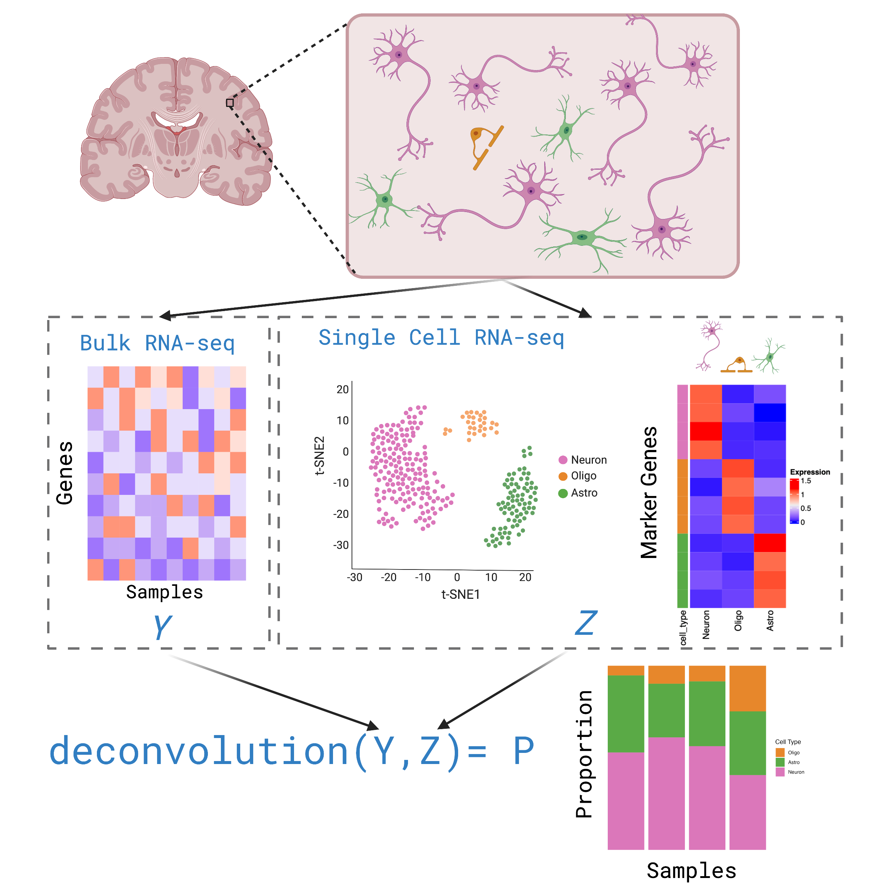
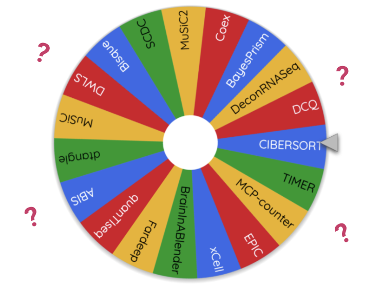
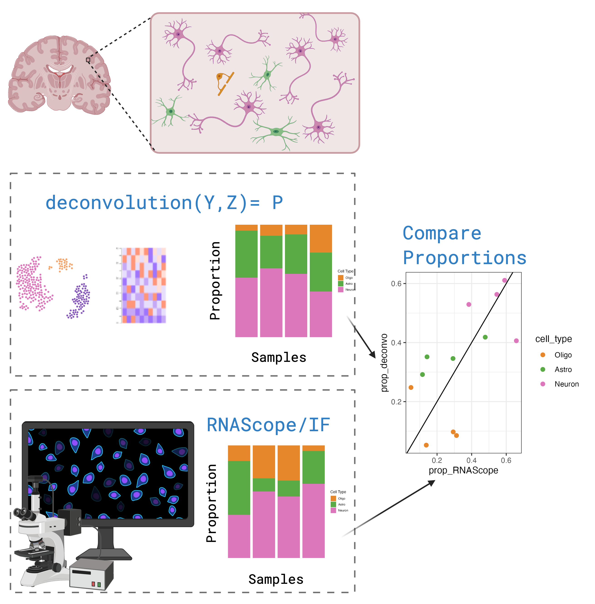
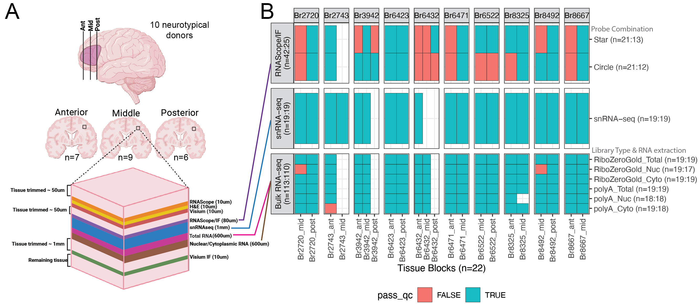
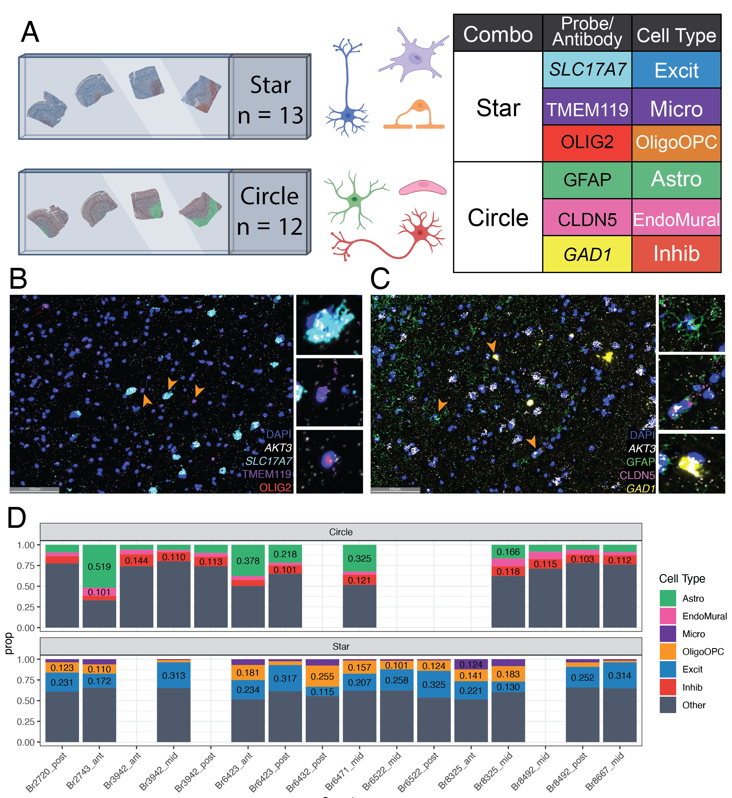
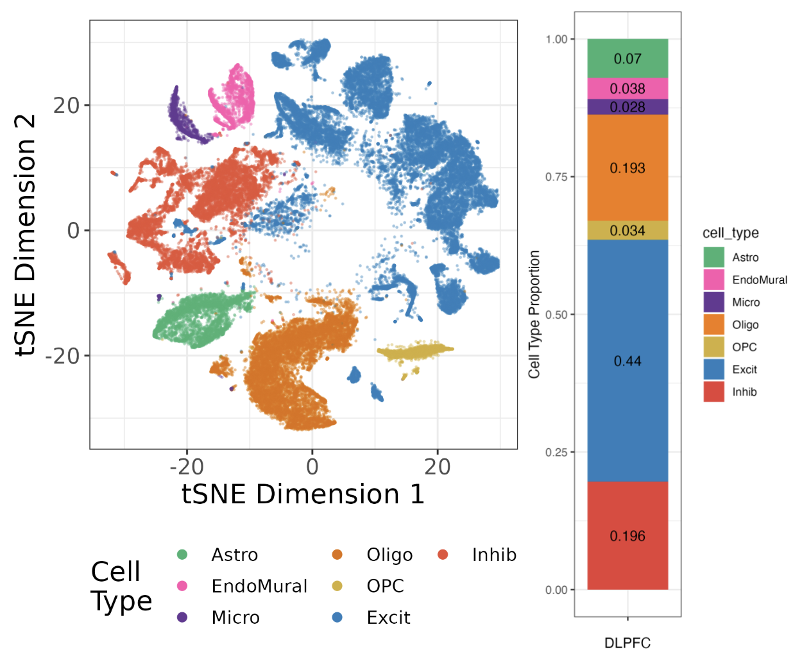
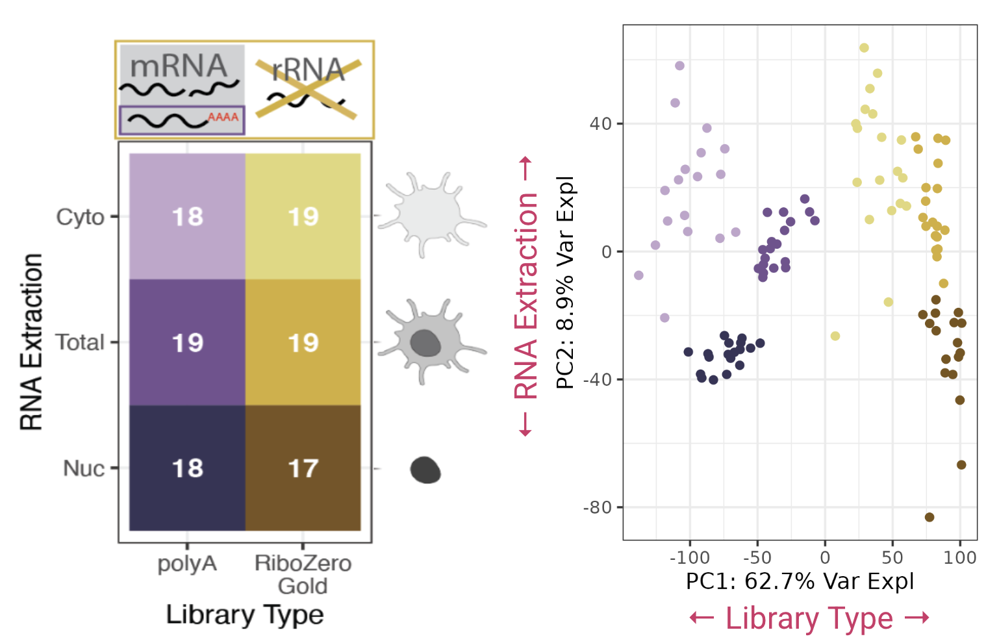
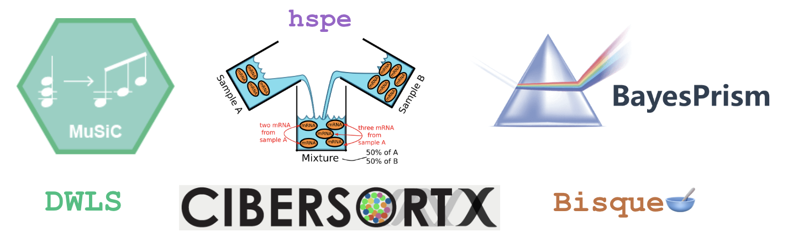
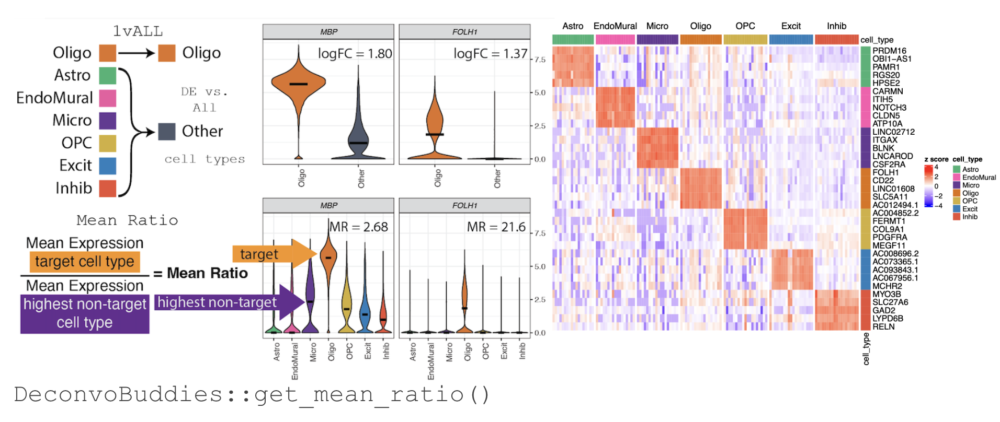
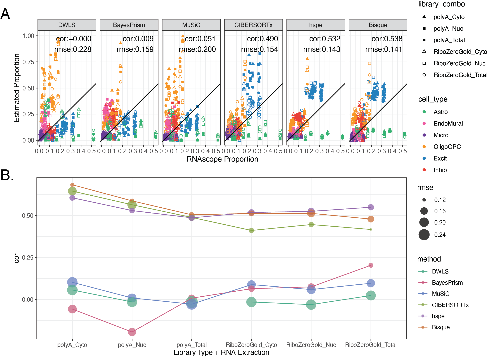

Deconvolution Benchmark: TL;DR
A high level overview of the Deconvolution Benchmark project, now published in Genome Biology!
Introduction
This blog post provides a high-level summary of our paper “Benchmark of cellular deconvolution methods using a multi-assay dataset from postmortem human prefrontal cortex” published in Genome Biology in April, 2025 (Huuki-Myers et al., n.d.).
In this deconvolution benchmark project we set out to determine the most accurate method for predicting cell type composition in bulk RNA-seq data from brain tissue. We also evaluated method for selecting marker genes, and introduced the MeanRatio method for marker gene selection. The dataset developed for this experiment, MeanRatio functions, and other helpful tools for deconvolution are available in the DeconvBuddies Bioconductor package.
What is deconvolution?
Complex tissue is made up of different cell types that express genes at different levels. In bulk RNA-seq this heterogeneity of the tissue is obscured, and the gene expression measurements represent a mixture of all of the cells and cell types in the sample. Differences in the cell type composition between samples, either technical or biologically real, can confound downstream analysis such as differential expression.
Deconvolution is an analysis that infers the cell type composition of bulk RNA-seq data, using gene expression profiles from single cell data.

How to preform deconvolution?
To run deconvolution you’ll need:
Your Bulk RNA-seq gene expression data
A refrence single cell RNA-seq gene expression data set, from the same tissue type
A deconvolution method (computational algorithm)
Available Deconvolution Methods
Reviewing the literature we found 20+ deconvolution methods available. This presents quite an overwhelming choice for researchers! Are there big diffrences between methods? If so how can we chose the most accurate method?

Existing Benchmarks
Benchmark studies aim to test and rank the performance of available methods. There have been several benchmarks studies on deconovlution methods, both with-in papers presenting new methods and as separate studies. However there is not much of a consensus on which method is the most accurate:
Benchmarking results from different papers on “real” data
MuSiC paper (Wang et al. 2019): MuSiC > NNLS > BSEQ-sx > CIBERSORT
Bisque paper (Jew et al. 2020): Bisque > MuSiC > CIBERSORT
Cobos benchmark (Avila Cobos et al. 2020): DWLS > MuSiC > Bisque > deconvoSeq
Jin et al. benchmark (Jin and Liu 2021): CIBERSORT, MuSiC > EPIC*, TIMER, DeconRNAseq
Dai et al., benchmark (Dai et al., n.d.): Dtangle > Bisque > Other Methods
Additionally the Cobos et al., 2020 benchmark study shows that different methods preform best on different data sets (Avila Cobos et al. 2020).
A challenge in benchmark studies is producing a “ground truth” estimate for cell type composition. Often in benchmarks pseudobulk mixtures created from the single cell data are used as the bulk data, so the absolute composition is known.
However we think pseudobulk data might not be a stand-in for real bulk RNA-seq data. Better to use orthogonal measurement of cell type compositions paired with real bulk RNA-seq data. We also were curious about the performance of methods specifically in brain RNA-seq data.
This motivated us to run our own deconvolution benchmark study!
Deconvolution Benchmark Study

Study Design
We designed an experiment to evaluate the performance of deconvolution methods on human brain tissue, specifically the dorsal lateral pre-frontal cortex (DLPFC). We used consecutive slices of 22 DLPFC brain blocks from 10 neurotypical donors, to create three assays:
RNAScope: orthogonal measurement of cell type compositions for six major cell types (n=25)
snRNA-seq: reference single nucleus data (n=19)
Bulk RNA-seq: using a variety of library types and RNA extractions methods (n=110)

RNAScope Cell Type Proportions 🔬
To obtain orthogonal measurements of cell type proportions for six major cell types in the DLPFC, we utilized multiplex single molecule fluorescent in situ hybridization (smFISH) combined with immunofluorescence (IF) using RNAScope/IF.
We designed two probe combinations:
Star measures:
Excitatory Neurons (Excit)
Mircoglia (Micro)
combined Oligodenrocytes and Oligodendrocyte Precursor cells (OligoOPC)
Circle measures:
Inhibitory Neurons (Inhib)
Endothelial/Mural cells (EndoMural)
Astrocytes (Astro)
We used HALO to segment and label cell types, then calculated cell type porotions for each sample.

Single Nucleus Reference dataset
The snRNA-seq data was previously analyzed as part of the spatialDLPFC project (see Huuki-Myers et al., or previous blog post for more details. This reference consist of 56k nuclei from 19 samples with seven broad cell types.

Bulk RNA-seq Data
For the bulk RNA-seq we we curious if using different library types (polyA or RiboZero) and RNA Extraction (nuclear, cytoplasmic, or total) would impact the accuracy of deconvolution. So for each brain block we prepared one sample of each library combination.
Analyzing just the bulk RNA-seq data we saw large differences in gene expression between the different preparations of the bulk data, principal component analysis shows the data divide by library type and RNA extraction.

Which methods to test?

From the large number of available methods we selected six methods that were previously selected as top performers in other benchmark papers, and applied a range of different approaches.
| Method | Citation | Approach | Marker Gene Selection | Availability | Top Benchmark Performance |
|---|---|---|---|---|---|
| DWLS (Dampened weighted least-squares) |
(Tsoucas et al. 2019) | weighted least squares | - | R package on CRAN | (Avila Cobos et al. 2020) |
| Bisque | (Jew et al. 2020) | Bias correction: Assay | - | R package on GitHub | (Dai et al., n.d.) |
| MuSiC (Multi-subject Single-cell) |
(Wang et al. 2019) | Bias correction: Source | Weights Genes | R package GitHub | (Jin and Liu 2021) |
| BayesPrism | (Chu et al. 2022) | Bayesian | Pairwise t-test | Webtool, R package on GitHub | (Hippen et al. 2023) |
| hspe (dtangle) (hybrid-scale proportion estimation) |
(Hunt et al. 2019) | High collinearity adjustment | Multiple options- default “ratio” 1vALL mean expression ratio | R package on GitHub | (Dai et al., n.d.) |
| CIBERSORTx | (Newman et al. 2019) | Machine Learning | Differential Gene expression | Webtool, Docker Image | (Jin and Liu 2021) |
Marker Gene Selection
A strategy to improve accuracy in deconvolution is to limit the analysis to a set of cell types marker genes, reducing noise in the analysis. To help select cell type specific marker genes we have developed the Mean Ratio method.
The Mean Ratio method works by selecting genes with large differences between gene expression in the target cell type and the closest non-target cell type. We calculate the MeanRatio for a target cell type for each gene by dividing the mean expression of the target cell by the mean expression of the next highest non-target cell type. Genes with the highest MeanRatio values are selected as marker genes.

For more information about selecting marker genes with Mean Ratio see Finding Marker Genes with DeconvoBuddies.
In our benchmark we found that methods responded differently and unpredictably to different marker gene sets, but top methods preformed better using the top 25 Mean Ratio marker genes for each cell type.
Method Performance 🏆
On to the main event: time to evaluate the deconvolution methods!
We preformed deconvolution on the 110 bulk RNA seq samples, with each of the six selected methods, using the top25 Mean Ratio genes.
We then compared the estimated cell type proportions with the RNAScope cell type proportions. We calculated Pearson’s correlation and the root mean squared error (RMSE) between the two. Methods with high correlation and low RMSE are the most accurate.
Overall Bisque and hspe were the top preforming methods. 🏆
These were also the top methods in Dai et al., benchmark which also examined brain data (Dai et al., n.d.).
Bisque preformed slightly better in polyA data, hspe slightly better in RiboZero data. CIBERSORTx was a close third place, preforming similarly to Bisque and hspe in polyA data.

Other Results
Above I have highlighted the main study design and conclusions of our deconvolution benchmark. In the paper we explored many more facets of deconvolution method performance. Some other results to highlight:
hspe is sensitive to marker gene selection
Bisque can preform poorly with < 4 donors
Bisque an hspe are unaffected by including “case” donors in the snRNA-seq reference
Bisque is biased to cell type proportions in the reference snRNA-seq data set
Bisque and hspe
Be sure to check out the paper for more! 📃
DeconvoBuddies

In conjunction with this study we have developed a Bioconductor package DeconvoBuddies.
DeconvoBuddies is currently on the devel branch and will be included in the next release (April 2025) release of Bioconductor.
The main features of the package are:
Find Marker Genes
Implements Mean Ratio marker gene selection
get_mean_ratio()Implements 1 vs. All marker gene selection
findMarkers_1vALL()
Plotting tools
Quickly plot gene expression over cell types (or other category)
plot_gene_express()Plot top marker genes with annotated statistics
plot_marker_expressPlot Composition bar plots of deconvolution outputs
plot_comoposition_bar()
Access Data
Access paired data from consecutive slices of human DLPFC, used in deconvolution benchmark
fetch_deconvo_data()- Access the RNA-scope, snRNA-seq, and bulk RNA-seq data described above
Truly TL;DR
In this benchmark we used a multi-assay dataset from the human DLPFC to compare deconvolution performace in six top methods. RNAScope/IF cell type estimates were utilized as an orthogonal measurement of the true cell type composition. We developed the Mean Ratio method to select highly specific cell type marker genes.
The top preforming deconvolution methods in brain were hspe(Hunt et al. 2019) and Bisque (Jew et al. 2020). 🏆
We found many factors such as n reference donors, marker genes selection, and library type of bulk RNA-seq can impact performance of deconvolution methods. The dataset, MeanRatio function, and other useful functions for deconvolution are included in our Bioconductor package DeconvoBuddies.
Be sure to check out the paper for the full exploration of Deconvolution Method performance (Huuki-Myers et al., n.d.) ! https://doi.org/10.1186/s13059-025-03552-3